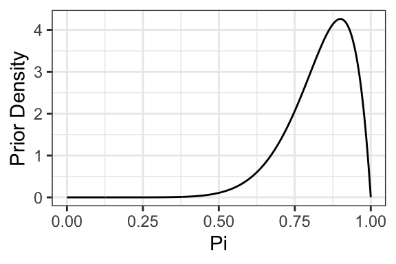
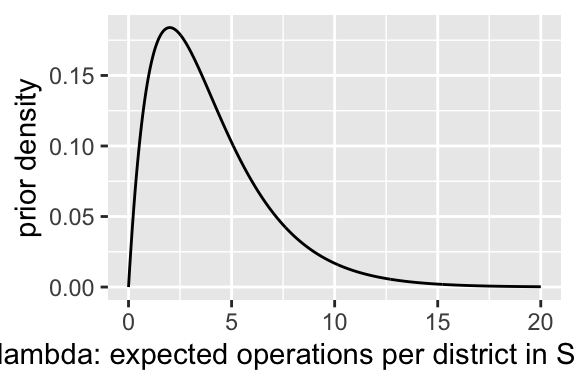
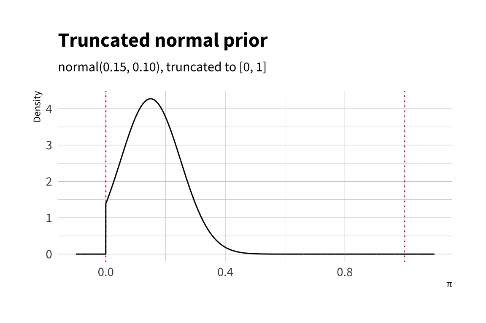
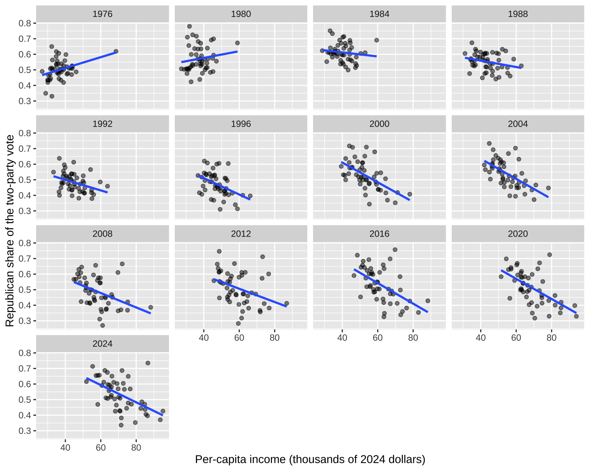

Complete solutions open Friday, October 2 at 12:00 PM
Exercise 1 Bayes’ Readings
Readings
Read Western and Jackman (1994, pdf). I recommend Jackman (2004, pdf) as well.
Read section 2.6 (pp. 57-61) of Gill (2014; on Dropbox) on Bayesian versus non-Bayesian approaches. I recommend ch. 1 for helpful context and the rest of ch. 2 for a second pass through the Bayesian engine from the notes.
I recommend pp. 97-128 of Gill (2014; on Dropbox) on prior distributions. Gill provides some helpful history on thinking about the prior distribution, including conjugate priors, uniform priors, invariant priors, improper priors, and elicited priors.1
Question
In this course, we have now studied two general engines: maximum likelihood and Bayesian inference. How should we think about the relationship between the two? Are they best understood as competing, incompatible alternatives? Or simply as interchangeable tools? If they compete, which approach is right, and why? If they are interchangeable, when might one be more useful than the other?
Complete solution
No solution intended. Answers will vary.
Exercise 2 Bernoulli
A pollster conducts a sample survey using a simple random sample of 500 adults. Of the 500 respondents, 220 say they approve of the job Donald Trump is doing as president.
Using a Bernoulli model with a beta prior, compute the posterior mean and 90% credible interval for the percent of the population that approve. Choose reasonable values for the parameters of the prior distribution. You may use a flat, “weakly informative,” or informative prior. Compute the posterior mean and a 90% credible interval.
Using the posterior from above, what’s the chance that the population percent is larger than 50%? Larger than 45%?
From part 1, how absurd can you make the beta prior without meaningful changes in the 90% credible interval?
Hint 1
The beta prior is conjugate to the Bernoulli likelihood, so a beta(\(\alpha^*\), \(\beta^*\)) prior and \(k\) successes in \(N\) trials give a beta(\(\alpha^* + k\), \(\beta^* + N - k\)) posterior. See The Posterior in the notes. Then use qbeta() for the interval and pbeta() for part 2.
Hint 2
For part 3, choose a new alpha_star and beta_star, plot the prior with the code below, then recompute the 90% credible interval from part 1 and compare.
# plot the priorggplot() +xlim(0, 1) +stat_function(fun = dbeta, n =1001,args =list(shape1 = alpha_star, shape2 = beta_star)) +labs(x ="pi: the proportion who approve",y ="prior density")
# plot "absurd" prior that *barely* changes the ciggplot() +xlim(0, 1) +stat_function(fun = dbeta, n =1001,args =list(shape1 = alpha_star, shape2 = beta_star)) +labs(x ="Pi",y ="Prior Density") +theme_bw()

At least to me, it’s really surprising how little impact this extremely informative prior has on the inferences. We get basically the same confidence interval, but using an absurdly strong and implausible prior.
Exercise 3 Poisson
Suppose you model a data set \(y = \{y_1, y_2, ..., y_N\}\) as iid draws from a Poisson distribution with parameter (mean) \(\lambda\), so that \(f(y_i; \lambda) = \frac{\lambda^{y_i}e^{-\lambda}}{y_i !}\). The Gamma distribution is the conjugate prior, so that \(f(\lambda) = \frac{\beta^\alpha}{\Gamma(\alpha)} \lambda ^{\alpha - 1}e^{-\beta\lambda}\).
Multiply the likelihood by the prior, drop the constants, and show that the posterior is a gamma distribution. What are its parameters?
Use this Poisson model to make inferences about the \(\lambda\) the expected number of operations in Santiago for Holland’s (2015) data.
State a sensible prior for \(\lambda\), the expected number of enforcement operations per district in Santiago. First write down a guess and a give-or-take for \(\lambda\) in words, then translate that guess into the gamma prior’s \(\alpha^*\) and \(\beta^*\) using the gamma’s mean \(\alpha/\beta\) and SD \(\sqrt{\alpha}/\beta\), and plot the prior to check that it puts most of its probability on plausible values and very little on absurd ones. A sensible prior here reflects what you believe(d) about operations per district before seeing the counts, not one tuned to match them. (Or perhaps is “weakly informative” in the sense that it near-zero prior density on the truly absurd values very close to zero and very far from zero.)
Compute the posterior mean and 90% credible interval. Interpret.
Compare the posterior mean and 90% credible interval to the ML estimate and 90% confidence interval. How does the interpretation of the two intervals differ?
Hint 1
For part 1, you will find Example: Exponential Distribution in the notes very helpful. The steps are the same and the math is very similar:
multiply the likelihood by the gamma prior
drop the terms that don’t depend on \(\lambda\),
collect the powers of \(\lambda\) and the powers of \(e\).
Hint 2
For part 2(a), qgamma(c(0.05, 0.95), alpha_star, beta_star) gives the range the prior considers plausible.
# prior parameters: choose these to match your guess and give-or-takealpha_star <-2# shapebeta_star <-0.5# rate# prior mean and sd, to check against your guessalpha_star/beta_star # meansqrt(alpha_star)/beta_star # sd# plot the priorggplot() +xlim(0, 20) +stat_function(fun = dgamma, n =1001,args =list(shape = alpha_star, rate = beta_star)) +labs(x ="lambda: expected operations per district in Santiago",y ="prior density")
Hint 3
For part 2(b), the data are crdata::holland2015, filtered to city == "santiago" (as in Week 3), and qgamma() takes the shape \(\alpha\) and then the rate \(\beta\).
The two terms in square brackets don’t depend on \(\lambda\), so they’re part of the normalizing constant and we can drop them. Collecting the powers of \(\lambda\) and the powers of \(e\) gives
which is a gamma distribution with shape \(\alpha^\prime = \alpha^* + \sum_{i = 1}^N y_i\) and rate \(\beta^\prime = \beta^* + N\) (up to the normalizing constant \(\frac{{\beta^\prime}^{\alpha^\prime}}{\Gamma(\alpha^\prime)}\)). So the posterior is \(\text{gamma}(\alpha^* + \sum_{i = 1}^N y_i, \beta^* + N)\). We add the sum of the counts to the prior shape and the number of observations to the prior rate.
Part (2a)
I don’t have much sense of the enforcement environment in Santiago, but a guess of a handful of operations per district, give or take a handful, seems reasonable. That’s not zero enforcement, and it’s not dozens of operations in every district either. This guess translates into a gamma prior with mean \(\alpha^*/\beta^* = 4\) and SD \(\sqrt{\alpha^*}/\beta^* \approx 2.8\), so I chose \(\alpha^* = 2\) and \(\beta^* = 0.5\).
# prior parameters: choose these to match your guess and give-or-takealpha_star <-2# shapebeta_star <-0.5# rate# prior mean and sd, to check against your guessalpha_star/beta_star # mean
[1] 4
sqrt(alpha_star)/beta_star # sd
[1] 2.828427
# 5th and 95th percentiles the prior considers plausibleqgamma(c(0.05, 0.95), alpha_star, beta_star)
[1] 0.710723 9.487729
# plot the priorggplot() +xlim(0, 20) +stat_function(fun = dgamma, n =1001,args =list(shape = alpha_star, rate = beta_star)) +labs(x ="lambda: expected operations per district in Santiago",y ="prior density")

The prior’s 5th and 95th percentiles are about 0.7 and 9.5 operations per district, so it puts most of its probability on a handful of operations and very little on zero or on dozens. It is also weakly informative in the sense of the prompt: it puts almost no prior probability on the truly absurd values, about 0.5% below 0.2 operations per district and about 0.5% above 15.
Part (2b)
From part 1, the posterior distribution is \(\text{Gamma}(\alpha^* + \sum{y}, \beta^* + N)\), where \(\alpha^*\) and \(\beta^*\) are the prior parameters for the gamma distribution.
There are 34 districts and 92 operations, so the posterior is \(\text{Gamma}(2 + 92, 0.5 + 34) = \text{Gamma}(94, 34.5)\). The posterior mean is about 2.72 operations per district, and there’s a 90% chance that \(\lambda\) falls between about 2.28 and 3.20.
Part (3)
# ml estimatelambda_hat <-mean(y)lambda_hat
[1] 2.705882
# se from the fisher informationse_hat <-sqrt(lambda_hat/length(y))# 90% cilambda_hat +c(-1.645, 1.645)*se_hat
[1] 2.241815 3.169950
The ML estimate is about 2.71, and the 90% CI runs from about 2.24 to 3.17. The posterior mean is a bit larger (2.72 rather than 2.71) because the prior has a mean of 4, which pulls the posterior mean up slightly. But the prior carries very little weight (\(\beta^* = 0.5\) acts like half an observation, against 34 real observations), so the two intervals are very similar.
We interpret frequentist 90% CI by claiming that the parameter falls within the interval (realizing that we’ll be wrong at most 10% of the time in the long run). We interpret the Bayesian 90% CI by saying that there’s a 90% chance that the parameter falls within the interval.
Exercise 4 Rejection
For the Bernoulli model, the beta distribution is the conjugate prior. And the beta distribution is especially nice because it’s flexible. The flexibility allows it to represent a wide range of prior beliefs. However, the beta distribution can be awkward to work with. We are most familiar with a normal distribution. This exercise highlights how posterior simulation can greatly simplify Bayesian inference.
For example, let’s use the toothpaste cap problem and data. Before collecting data, we might think that the chance of a top is about 15%, give or take 10% or so. This suggests a normal distribution with \(\mu = 0.15\) and \(\sigma = 0.1\). However, the normal distribution has support outside the [0, 1] support of \(\pi\). But this can still work! We can simply set the normal pdf to zero outside the [0, 1] interval and renormalize the distribution. This gives us the truncated normal distribution.
Let’s use the usual Bernoulli likelihood and the truncated normal prior, find the unnormalized posterior distribution, and use the rejection algorithm to obtain a sample from the posterior distribution.
Bernoulli likelihood
To begin, recall that the probability mass function (pmf) of a single Bernoulli trial with success probability \(\pi\) is
\[
f(y \mid \pi) = \pi^y (1-\pi)^{1-y}, \quad y \in \{0,1\}.
\] Because the trials are independent, the joint likelihood for \(n\) observations \(y_1,\dots,y_n\) is the product
\[
f(y \mid \pi) = \prod_{i=1}^n \pi^{y_i} (1-\pi)^{1-y_i}.
\] Collecting terms, let \(k = \sum_{i=1}^n y_i\) be the total number of successes. Then the likelihood simplifies to
\[
f(y \mid \pi) = \pi^k (1-\pi)^{n-k}.
\] Notice that this expression is the likelihood function \(L(\pi) = f(y \mid \pi)\). We just denote them slightly differently to emphasize different pieces depending on whether we are using maximum likelihood or finding the posterior.
Truncated normal prior
Suppose we want to model prior information about \(\pi\) using a truncated normal distribution. Begin with the usual normal distribution, then restrict the support to the interval \([0,1]\) since \(\pi\) must be a valid probability. Formally, if \(Z \sim \mathcal{N}(\mu,\sigma^2)\), then the truncated normal prior is defined as
\[
f(\pi) = \frac{\phi\!\left(\tfrac{\pi-\mu}{\sigma}\right)}{\sigma \left[\Phi\!\left(\tfrac{1-\mu}{\sigma}\right) - \Phi\!\left(\tfrac{0-\mu}{\sigma}\right)\right]},
\quad 0 \le \pi \le 1,
\] where \(\phi(\cdot)\) is the standard normal density and \(\Phi(\cdot)\) is the standard normal distribution function. The denominator is important–\(\sigma \left[\Phi\!\left(\tfrac{1-\mu}{\sigma}\right) - \Phi\!\left(\tfrac{0-\mu}{\sigma}\right)\right]\) serves as a normalizing constant so that the density integrates to one over the admissible interval.
This prior can be especially useful when we have an approximate guess for \(\pi\) and a give-or-take (i.e., an SD) around that guess. It’s quite intuitive to model this guess using a normal distribution.
For example, in the toothpaste cap problem, if we believe the probability is about \(0.15\) give-or-take \(0.10\), then the truncated normal prior places most of its mass near \(0.15\) but avoids assigning probability outside the valid range of \([0,1]\).

Unnormalized Posterior
To find the posterior distribution, we multiply the likelihood times the prior. Bayes’ rule tells us
\[
f(\pi \mid y) \propto f(y \mid \pi) \, f(\pi),
\] where \(f(y \mid \pi)\) is the likelihood and \(f(\pi)\) is the prior.2 Substituting in the expressions we derived above, we obtain
\[
f(\pi \mid y) \propto \underbrace{\left[ \pi^k (1-\pi)^{n-k} \right]}_{\text{Bernoulli likelihood}} \cdot \underbrace{\left[
\frac{\phi\!\left(\tfrac{\pi-\mu}{\sigma}\right)}{\sigma \left[\Phi\!\left(\tfrac{1-\mu}{\sigma}\right) - \Phi\!\left(\tfrac{0-\mu}{\sigma}\right)\right]} \right]}_{\text{truncated normal prior}},
\quad 0 \le \pi \le 1.
\] This is the unnormalized posterior (i.e., it does NOT integrate to one, as required of pdfs). To make this a proper posterior, we would need to find the normalizing constant for the right-hand side. However, the rejection algorithm does not require a proper posterior—the unnormalized posterior is sufficient.
But we can take further advantage of this. The denominator \(\sigma \left[\Phi\!\left(\tfrac{1-\mu}{\sigma}\right) - \Phi\!\left(\tfrac{0-\mu}{\sigma}\right)\right]\) of the prior is also a constant with respect to \(\pi\). For sampling purposes we can treat it as part of the proportionality constant. Thus, the unnormalized posterior density is
Conveniently, the difficult truncation part of the prior just drops out, and we are left with a regular normal pdf.
We can write this function easily in R and plot it.
# unnormalized posterior for our data and priorf <-function(pi, k =8, n =150, mu =0.15, sigma =0.10) {ifelse( pi <0| pi >1, # check if outside [0, 1]0, # return 0 if outside [0, 1] (pi^k) * ((1- pi)^(n - k)) *dnorm(pi, mean = mu, sd = sigma) )}
Notice that the posterior densities are very small. This will be numerically challenging. For this reason, we tend to perform the computation using the unnormalized log-posterior. However, the intuition for the algorithm isn’t immediately obvious. Since our goal here is to learn the intuition, we’re sticking with the unlogged posterior.
From the figure, we can see that an envelope constant \(M = 8 \times 10^{-14}\) would work well. From there, we can let the algorithm do the work.
Tasks
For the toothpaste cap problem data (\(k = 8\); \(n = 150\)) and the model and priors discussed above (Bernoulli likelihood; truncated normal prior with \(\mu = 0.15\) and \(\sigma = 0.10\)), use the rejection algorithm to find the posterior mean and a 90% credible interval for the odds of failure. That is, generate posterior simulations of \(\pi\), transform those simulations using \(\text{odds of failure} = \frac{1 - \pi}{\pi}\), and then summarize the simulations.
Explain why the algorithm works. Why must \(M\) be at least as large as the maximum of \(f\)? What goes wrong if \(M\) is too small? If \(M\) is ten times larger than it needs to be, what changes about the samples? What changes about the run?
Hint
For part 1, you can borrow rej() from the Rejection Sampling section of the notes. Then transform each simulation of \(\pi\) into the odds of failure before you summarize. For part 2, the beta(4, 10) figure in the notes shows the acceptance probability at four proposals. Think about how the histogram of accepted draws is built from uniform proposals.
Complete solution
Part 1
First, borrow the rejection algorithm from the notes.
rej <-function(f, S, M) {# record start time start_time <-Sys.time()# create containers and initialize counters samples <-numeric(S) # container to store samples rejects <-NULL# container to track rejected values; for teaching; slow! s <-1# currently trying to take sample 1 n_prop <-0# count proposals (for an acceptance-rate message)# so long as the current sample s is less # than the desired samples S.# do the following:while (s <= S) { # A: propose z ~ uniform(0,1) z <-runif(1)# B: draw u ~ uniform(0,1) u <-runif(1)# C: Accept or reject fz <-f(z) # compute once, for effeciency## scenario 1: u <= f(z)/M → Acceptif (u <= fz / M) { samples[s] <- z s <- s +1 } ## scenario 2: f(z) > M → shouldn't happen; errorif (fz > M) stop("Stop: Envelope M is too small.") # find appropriate M## scenario 3: u > f(z)/M → Reject## tracking these values just for teaching and learning--not needed usuallyif (u > fz / M) { rejects <-c(rejects, z) }# track total proposals so far n_prop <- n_prop +1 }# print a summary reportmessage(paste0("💪 Successfully generated ", scales::comma(S), " samples! 🎉\n\n","✅ Accepted samples: ", scales::comma(S), "\n","❌ Rejected samples: ", scales::comma(length(rejects)), "\n","﹪ Acceptance rate: ", scales::percent(S / n_prop, accuracy =1), "\n","⏰ Total time: ", prettyunits::pretty_dt(Sys.time() - start_time) ) )# returnlist(n_prop = n_prop,acc_rate = S / n_prop,samples = samples,rejects = rejects )}
Next, create the unnormalized posterior.
# unnormalized posterior for our data and priorf <-function(pi, k =8, n =150, mu =0.15, sigma =0.10) {ifelse( pi <0| pi >1, # check if outside [0, 1]0, # return 0 if outside [0, 1] (pi^k) * ((1- pi)^(n - k)) *dnorm(pi, mean = mu, sd = sigma) )}
Now run the rejection algorithm. \(S = 1,000\) samples should be sufficient. The question identifies \(M = 8 \times 10^{-14}\) as a good choice.
Finally, transform the posterior samples to obtain simulations of the quantity of interest and then summarize those simulations.
pi_tilde <- r$samples # extract simulations of pioof_tilde <- (1- pi_tilde)/pi_tilde # transform to odds of failuremean(oof_tilde) # posterior mean
[1] 16.97433
quantile(oof_tilde, probs =c(0.05, 0.95)) # 90% equal-tailed ci
5% 95%
9.241741 28.875474
In this problem, we use a Bernoulli likelihood with \(k=8\) successes out of \(n=150\) trials. We model our prior beliefs with a truncated normal distribution with \(\mu=0.15\) and \(\sigma=0.10\), reflecting a belief that the chance of success is “about 15% give or take 10 percentage points or so” (but constrained to the \([0,1]\) range). Combining these with Bayes’ rule yields the posterior, which we sampled from using a rejection algorithm. The posterior mean of the odds of failure is about 17.0, with a 90% credible interval from 9.2 to 28.9. This means that, after updating our beliefs with the data, we conclude that failure is about 17 times more likely than success, with a 90% probability that the odds of failure fall between about 9:1 and 29:1.
Part 2
The algorithm proposes values of \(\pi\) uniformly, so every value is proposed equally often, and it accepts a proposal \(z\) with probability \(f(z)/M\). Near the posterior mode, \(f(z)/M\) is close to one and the algorithm keeps almost every proposal. In the tails, \(f(z)/M\) is close to zero and the algorithm throws almost every proposal away. The accepted draws pile up in proportion to \(f\), so their histogram has the shape of \(f\). (The notes’ figure for the beta(4, 10) target shows this. The stacked histogram of accepted and rejected proposals is flat because the proposals are uniform, and the accepted draws alone take the shape of the target.)
\(M\) must be at least the maximum of \(f\) so that \(f(z)/M\) is a probability. If \(M\) is too small, then \(f(z)/M > 1\) near the mode, and the algorithm accepts every proposal there. It can’t accept more than all of them, so the region around the mode is under-represented relative to the tails, and the samples come from the wrong distribution. This is why rej() stops with an error when it sees \(f(z) > M\).
If \(M\) is ten times larger than it needs to be, the samples are still correct. Every acceptance probability is divided by the same constant, so the relative acceptance rates across values of \(\pi\) don’t change, and the accepted draws still take the shape of \(f\). The run changes instead. The acceptance rate falls by a factor of ten, so the algorithm needs about ten times as many proposals (and about ten times as long) to collect the same \(S\) samples. This is why we choose \(M\) just above the maximum of \(f\).
Exercise 5 Posterior mean of the odds
Suppose a small pilot survey of 20 adults finds that 6 approve of the job Donald Trump is doing as president. Use a Bernoulli model with a uniform prior (i.e., a beta(1, 1) prior) for the proportion \(\pi\) who approve. Suppose the quantity of interest is the odds of approval \(\pi/(1 - \pi)\).
Find the posterior distribution of \(\pi\). Simulate 100,000 draws from it.
Compute the posterior mean of the odds two ways. First, transform each simulation of \(\pi\) into the odds and then average (i.e., transform, then summarize). Second, average the simulations of \(\pi\) and then transform that average into the odds (i.e., summarize, then transform). Which one is the posterior mean of the odds? Which is larger? Why?
Compute the 90% credible interval for the odds the same two ways (i.e., use the 5th and 95th percentiles instead of the average). What do you notice? Why?
Hint
See A Bayesian Invariance Property in the notes. The odds \(\pi/(1 - \pi)\) is a convex function of \(\pi\), so think about Jensen’s inequality.
Complete solution
Part 1
The uniform prior is beta(1, 1). With \(k = 6\) and \(N = 20\), the posterior is beta(\(1 + 6\), \(1 + 20 - 6\)) = beta(7, 15).
# posterioralpha_prime <-1+6beta_prime <-1+20-6# simulate from the posteriorset.seed(1234)pi_tilde <-rbeta(100000, alpha_prime, beta_prime)
Part 2
# transform, then summarizeodds_tilde <- pi_tilde/(1- pi_tilde)mean(odds_tilde)
[1] 0.5004554
# summarize, then transformmean_pi <-mean(pi_tilde)mean_pi/(1- mean_pi)
[1] 0.4671975
Transform-then-summarize gives about 0.50. Summarize-then-transform gives about 0.47. The first is the posterior mean of the odds. The simulation-based invariance property in the notes says that we get simulations of the odds by transforming each simulation of \(\pi\), and then we summarize those. (For the beta distribution, we can also find this mean in closed form. It’s \(\frac{\alpha'}{\beta' - 1} = \frac{7}{14} = 0.5\), which matches.)
Transform-then-summarize is larger because the odds is a convex function of \(\pi\). By Jensen’s inequality, the average of a convex function is at least the function of the average. For example, a simulation of \(\pi\) that’s 0.15 above the posterior mean (i.e., about 0.47) gives odds of about 0.88, which is 0.41 above the odds at the posterior mean. A simulation that’s 0.15 below (i.e., about 0.17) gives odds of about 0.20, which is only 0.27 below. The large simulations push the average of the odds up more than the small simulations pull it down.
This is the same inequality that made the ML estimate of the odds biased in Week 3. There, \(E(\hat{\pi}) = \pi\), but \(E\left[\hat{\pi}/(1 - \hat{\pi})\right] > \pi/(1 - \pi)\). Here, the expectation is over the posterior rather than the sampling distribution, but the math is the same.
Part 3
# transform, then summarizequantile(odds_tilde, probs =c(0.05, 0.95))
5% 95%
0.2017653 0.9499302
# summarize, then transformq_pi <-quantile(pi_tilde, probs =c(0.05, 0.95))q_pi/(1- q_pi)
5% 95%
0.2017653 0.9499302
The two intervals are exactly the same (about 0.20 to 0.95)! The odds is an increasing function of \(\pi\), so it doesn’t change the order of the simulations. The simulation of \(\pi\) at the 5th percentile becomes the simulation of the odds at the 5th percentile, and so on. This means that we can freely transform the endpoints of a percentile credible interval (and the posterior median) with an increasing function. We cannot freely transform the posterior mean.
Exercise 6 Ordered logit probabilities
The notes define the ordered logit through its cumulative probabilities
where the linear predictor \(\eta_i = X_i\beta\) has no intercept and the cutpoints are ordered so that \(\alpha_1 < \alpha_2 < \cdots < \alpha_{J-1}\).
Show that \(\Pr(Y_i = j) = \operatorname{logit}^{-1}(\alpha_j - \eta_i) - \operatorname{logit}^{-1}(\alpha_{j-1} - \eta_i)\) for \(j = 2, \ldots, J-1\). What are \(\Pr(Y_i = 1)\) and \(\Pr(Y_i = J)\)?
The figure in the notes uses \(J = 4\), the cutpoints \(\alpha = (-2.5, -1.3, 1.3)\), and \(\eta_i = -1.5\). Use plogis() to compute the four category probabilities. Do they sum to one?
Why doesn’t \(\eta_i\) include an intercept? What would happen if you added an intercept \(\beta_0\) to \(\eta_i\)?
Every cutpoint shares the same coefficients \(\beta\). Show that increasing \(x_{ik}\) by one unit changes the log-odds \(\log\left[\frac{\Pr(Y_i \leq j)}{\Pr(Y_i > j)}\right]\) by \(-\beta_k\) for every\(j\). This is called the “proportional odds” assumption. What does this assumption get us? What does it cost?
Hint
The event \(Y_i \leq j\) happens when \(Y_i \leq j - 1\) or when \(Y_i = j\), and these two events can’t both happen. For part 4, notice that the log-odds is the logit of \(\Pr(Y_i \leq j)\), and the logit undoes the inverse logit.
Complete solution
Part 1
The events \(Y_i \leq j - 1\) and \(Y_i = j\) can’t both happen, and together they make up the event \(Y_i \leq j\). So the probabilities add:
The two end categories only have one cutpoint each. For the lowest category, \(\Pr(Y_i = 1) = \Pr(Y_i \leq 1) = \operatorname{logit}^{-1}(\alpha_1 - \eta_i)\). For the highest category, \(\Pr(Y_i = J) = 1 - \Pr(Y_i \leq J - 1) = 1 - \operatorname{logit}^{-1}(\alpha_{J-1} - \eta_i)\). (If you set \(\alpha_0 = -\infty\) and \(\alpha_J = \infty\), then the general formula covers these two cases as well, since \(\operatorname{logit}^{-1}(-\infty) = 0\) and \(\operatorname{logit}^{-1}(\infty) = 1\).)
Part 2
# cutpoints and linear predictor from the figure in the notesalpha <-c(-2.5, -1.3, 1.3)eta <--1.5# cumulative probabilities Pr(Y <= j), j = 1, 2, 3cum_p <-plogis(alpha - eta)cum_p
This means that a model with intercept \(\beta_0\) and cutpoints \(\alpha_j\) gives exactly the same probabilities as a model with no intercept and cutpoints \(\alpha_j - \beta_0\). If we change the intercept and change every cutpoint by the same amount, all probabilities remain the same. If the probabilities remain the same, then the likelihood is the same for every value of \(\beta_0\) (i.e., the model is not identified). Another way to think about this is that the cutpoints already play the role of the intercept, so we don’t need \(\beta_0\).
Notice that with \(J = 2\) categories, the ordered logit is the usual logit. There’s one cutpoint and \(\Pr(Y_i = 2) = 1 - \operatorname{logit}^{-1}(\alpha_1 - \eta_i) = \operatorname{logit}^{-1}(\eta_i - \alpha_1)\), so \(-\alpha_1\) is the logit’s intercept.
If \(x_{ik}\) increases by one unit, then \(\eta_i\) increases by \(\beta_k\), and the log-odds decreases by \(\beta_k\). The cutpoint \(\alpha_j\) is the only part of this expression that depends on \(j\), and it doesn’t change. So the log-odds changes by \(-\beta_k\) for every \(j\).
The assumption gets us a much smaller model (i.e., more parsimonious). We need only one coefficient per explanatory variable, rather than \(J - 1\) of them (i.e., one per cutpoint). Fewer parameters means more precise estimates. It also gives the coefficients a simple interpretation. A positive \(\beta_k\) moves probability toward the higher categories, and a negative \(\beta_k\) moves it toward the lower categories.
But the assumption costs us flexibility. An explanatory variable can only move the probabilities in one direction along the scale. The model cannot describe a variable that pushes people toward both ends. For example, political interest might make people more likely to be strong Democrats and more likely to be strong Republicans, while making them less likely to be independents. The ordered logit cannot capture that pattern.
Exercise 7 Red State, Blue State: Part 1
Over the next several weeks, we’ll be looking at patterns of income and voting at the level of US states and individual survey respondents. You’ll find that some important and puzzling patterns emerge.
The “Red State, Blue State” exercises are motivated by the patterns in Gelman, Shor, Bafumi, and Park (2007), “Rich State, Poor State, Red State, Blue State: What’s the Matter with Connecticut?” Quarterly Journal of Political Science 2: 345–367 [pdf]. The states, the income scale, the models, and the questions all come from that paper. We’ll rarely cite it in the exercises themselves.
The data below have one row per state per presidential election from 1976 to 2024 (50 states; no DC). rep_share is the Republican share of the two-party vote. pc_income is per-capita personal income in thousands of 2024 dollars, so the values are comparable across years.
Make a scatterplot of rep_share against pc_income, with one panel per election. Add a fitted line.
Describe what happens to the relationship over time. When did rich states become blue states?
Hint
facet_wrap(vars(year)) makes one panel per election, and geom_smooth(method = "lm", se = FALSE) adds the fitted line.
Complete solution
Part 1
# scatterplot, one panel per electionggplot(red_state, aes(x = pc_income, y = rep_share)) +geom_point(alpha =0.5) +geom_smooth(method ="lm", se =FALSE) +facet_wrap(vars(year)) +labs(x ="Per-capita income (thousands of 2024 dollars)",y ="Republican share of the two-party vote")
`geom_smooth()` using formula = 'y ~ x'

Part 2
In 1976 and 1980, richer states voted a little more Republican. There’s not much relationship from 1982 to 1990. From 1992 onward, richer states voted a little more Democratic. The slope steepens through 2000 and 2004 and then stays about the same through 2024. The conclusion is this: rich states became blue states during the 1980s and 1990s; the pattern has remained for the last twenty years.
Exercise 8 Red State, Blue State: Part 2(a)
Part 1 was about the relationship between income and voting at the state level. But we might also ask about individuals—within a state, how does income relate to party ID? (Let’s use party ID rather than vote choice so we can use an ordinal model!)
Let’s start with Mississippi, which is the poorest state, and use data from the 2024 Cooperative Election Study (CES).
The data have one row per respondent and seven variables.
pid is the seven-point party ID, from “1. Strong Democrat” to “7. Strong Republican” (the numeric prefix makes the alphabetical order match the ordinal order).
income is a five-point scale, from −2 (under $20k) to 2 ($200k and up); each category holds about a fifth of respondents nationally, except the top one, which holds the richest 5%.
The state variables are constant within the file, which includes only respondents from Mississippi.
# load data; pid as an ordered factorms <-read_csv("https://pos5747.github.io/files/red-state-part2-mississippi.csv") |>mutate(pid =factor(pid, ordered =TRUE)) |>glimpse()
Use MASS::polr() to fit an ordered logit of pid on income. Interpret the sign of the coefficient.
Use predictions() to plot the probability of each of the seven categories as income moves from −2 to 2. Then plot the cumulative probabilities \(\Pr(Y \geq j)\) for \(j = 2, \ldots, 7\). (The notes compute both \(\Pr(Y \leq j)\) and \(\Pr(Y \geq j)\), so you can adapt that code.)
Use comparisons() to compute the change in \(\Pr(Y \geq 5)\) (i.e., the probability that a respondent identifies with or leans toward the Republican Party) as income moves from −1 to 1. What do you conclude about income and party ID in Mississippi?
Hint 1
For part 1, polr() needs the outcome as an ordered factor (the load chunk above does this) and Hess = TRUE to compute standard errors. Use MASS::polr() rather than library(MASS), because {MASS} has its own select() that masks dplyr::select().
Hint 2
For part 2, predictions() returns one row per category per row of newdata: group holds the category and estimate its probability. The plotting and bookkeeping below are done. Fill in the predictions() call, the sort, and the running sum. See Computing cumulative probabilities in the notes for the running-sum idea.
# category probabilities as income moves from -2 to 2# p_ms <- predictions(...) # one row per category per value of income# plot Pr(Y = j) against income, one line per categoryggplot(p_ms, aes(x = income, y = estimate, color = group)) +geom_line() +geom_point()# cumulative probabilities Pr(Y >= j): add up categories 7, 6, ..., jcumulative_ms <- p_ms |># arrange(): sort so the highest category comes first within each incomegroup_by(income) |># mutate(): a running sum of estimate with cumsum() gives cumulative_probungroup() |>filter(as.integer(group) >1) # Pr(Y >= 1) is always 1# plot Pr(Y >= j) against income, one line per categoryggplot(cumulative_ms, aes(x = income, y = cumulative_prob, color = group)) +geom_line() +geom_point()
Hint 3
For part 3: without hypothesis, comparisons() returns one first difference for each of the seven categories. \(\Pr(Y \geq 5)\) is the sum of the probabilities of categories 5, 6, and 7, so hypothesis = "b5 + b6 + b7 = 0" adds the 5th, 6th, and 7th rows and computes the SE of that sum. Fill in the variables argument (Week 5’s list() form).
# change in Pr(Y >= 5) as income moves from -1 to 1# comparisons(fit_ms,# variables = ..., # income from -1 to 1# newdata = datagrid(),# hypothesis = "b5 + b6 + b7 = 0",# conf_level = 0.9)
Complete solution
Part 1
# fit ordered logit modelfit_ms <- MASS::polr(pid ~ income, data = ms, Hess =TRUE)summary(fit_ms)
Call:
MASS::polr(formula = pid ~ income, data = ms, Hess = TRUE)
Coefficients:
Value Std. Error t value
income 0.3405 0.07946 4.285
Intercepts:
Value
1. Strong Democrat|2. Not very strong Democrat -1.1180
2. Not very strong Democrat|3. Independent (leans Democrat) -0.6597
3. Independent (leans Democrat)|4. Independent -0.4170
4. Independent|5. Independent (leans Republican) 0.0973
5. Independent (leans Republican)|6. Not very strong Republican 0.5475
6. Not very strong Republican|7. Strong Republican 1.1025
Std. Error
1. Strong Democrat|2. Not very strong Democrat 0.1161
2. Not very strong Democrat|3. Independent (leans Democrat) 0.1082
3. Independent (leans Democrat)|4. Independent 0.1058
4. Independent|5. Independent (leans Republican) 0.1041
5. Independent (leans Republican)|6. Not very strong Republican 0.1072
6. Not very strong Republican|7. Strong Republican 0.1178
t value
1. Strong Democrat|2. Not very strong Democrat -9.6318
2. Not very strong Democrat|3. Independent (leans Democrat) -6.0976
3. Independent (leans Democrat)|4. Independent -3.9425
4. Independent|5. Independent (leans Republican) 0.9343
5. Independent (leans Republican)|6. Not very strong Republican 5.1096
6. Not very strong Republican|7. Strong Republican 9.3573
Residual Deviance: 1621.07
AIC: 1635.07
I use MASS::polr() rather than library(MASS) because {MASS} has its own select(), which masks dplyr::select().
The coefficient for income is about 0.34 (SE about 0.08). Higher-income respondents in Mississippi identify as more Republican.
Part 2
# probability of each category as income variesp_ms <-predictions(fit_ms, newdata =datagrid(income =-2:2))# plot category probabilitiesggplot(p_ms, aes(x = income, y = estimate, color = group)) +geom_line() +geom_point()
The probability of being a “Strong Democrat” decreases from about 0.39 at the lowest income level to about 0.14 at the highest incomes. The probability of being a “Strong Republican” increases from about 0.14 to about 0.40. \(\Pr(Y \geq 5)\) (the probability of “5. Independent (leans Republican),” “6. Not very strong Republican,” or “7. Strong Republican”) goes from about 0.32 to about 0.64.
Part 3
# change in Pr(Y >= 5) as income moves from -1 to 1comparisons(fit_ms,variables =list(income =c(-1, 1)),newdata =datagrid(),hypothesis ="b5 + b6 + b7 = 0",conf_level =0.9)
Moving from the $20–40k bracket to the $80–200k bracket raises \(\Pr(Y \geq 5)\) by about 0.17 (90% CI from about 0.10 to 0.23). In Mississippi, richer people are much more likely to identify with or lean toward the Republican Party.
Exercise 9 Red State, Blue State: Part 2(b)
Now the richest state.
# load data; pid as an ordered factorct <-read_csv("https://pos5747.github.io/files/red-state-part2-connecticut.csv") |>mutate(pid =factor(pid, ordered =TRUE)) |>glimpse()
Repeat parts 1 and 3 of Part 2(a) for the 520 respondents from Connecticut.
Compare the two states. Does income matter more in Mississippi or in Connecticut?
Hint
Copy your code from parts 1 and 3 of Part 2(a) and change ms to ct.
Complete solution
Part 1
# fit ordered logit modelfit_ct <- MASS::polr(pid ~ income, data = ct, Hess =TRUE)summary(fit_ct)
Call:
MASS::polr(formula = pid ~ income, data = ct, Hess = TRUE)
Coefficients:
Value Std. Error t value
income 0.07854 0.06922 1.135
Intercepts:
Value
1. Strong Democrat|2. Not very strong Democrat -0.7798
2. Not very strong Democrat|3. Independent (leans Democrat) -0.3046
3. Independent (leans Democrat)|4. Independent 0.1908
4. Independent|5. Independent (leans Republican) 0.9848
5. Independent (leans Republican)|6. Not very strong Republican 1.4792
6. Not very strong Republican|7. Strong Republican 1.9707
Std. Error
1. Strong Democrat|2. Not very strong Democrat 0.0947
2. Not very strong Democrat|3. Independent (leans Democrat) 0.0890
3. Independent (leans Democrat)|4. Independent 0.0883
4. Independent|5. Independent (leans Republican) 0.0986
5. Independent (leans Republican)|6. Not very strong Republican 0.1128
6. Not very strong Republican|7. Strong Republican 0.1337
t value
1. Strong Democrat|2. Not very strong Democrat -8.2378
2. Not very strong Democrat|3. Independent (leans Democrat) -3.4245
3. Independent (leans Democrat)|4. Independent 2.1605
4. Independent|5. Independent (leans Republican) 9.9835
5. Independent (leans Republican)|6. Not very strong Republican 13.1124
6. Not very strong Republican|7. Strong Republican 14.7383
Residual Deviance: 1889.04
AIC: 1903.04
# change in Pr(Y >= 5) as income moves from -1 to 1comparisons(fit_ct,variables =list(income =c(-1, 1)),newdata =datagrid(),hypothesis ="b5 + b6 + b7 = 0",conf_level =0.9)
The coefficient for income is about 0.08 (SE about 0.07), and the change in \(\Pr(Y \geq 5)\) is about 0.03 (90% CI from about −0.01 to 0.08). In Connecticut, income has little relationship with party ID.
Part 2
Income and partisanship are strongly related in Mississippi (a first difference of about 0.17, 90% CI from about 0.10 to 0.23) and barely related in Connecticut (about 0.03, 90% CI from about −0.01 to 0.08). That is, we see a strong relationship the poorest state and a weak relationship in the richest state.
Might income matter more in poor states?
Exercise 10 Exam review
Prepare for the exam. There’s not a devoted review week, so please plan ahead. The questions will follow directly from the lectures, notes, and review exercises. The exam will be a mixture very short objective questions (e.g., multiple choice, fill-in-the-blank, matching); short, open-ended questions requiring 1-3 sentences; and longer open-ended questions requiring several sentences and/or longer derivations. In developing the exam questions, I draw from examples in the slides, notes, and exercises.
I hesitate to give a “study guide” because it might lead you to exclude material that appears on the exam. Nonetheless, here are some things to definitely include in your preparation:
The mathematics emphasized during week 1, especially those tools that have come up repeatedly (e.g., logs, gradient, Hessian).
ML, Fisher information, invariance property, delta method; and how all these fit together.
Explain “consistency.”
Define the predictive distribution. Explain how we can use it to evaluate a fitted model. Connect this to Poisson versus negative binomial models of counts.
Explain the optim() function, including its arguments.
What is the “sampling distribution”? What are the three features we care about? Connect these three features to other relevant concepts.
What is a parametric bootstrap and how can it be used to create a 90% CI?
Work out closed form SEs using Fisher information and delta method for simple examples.
Explain “coverage” and describe how we might use a Monte Carlo simulation to evaluate coverage.
Demonstrate the equivalence of scalar and matrix forms of \(X_i\beta\).
Explain how to use R formulas to include interactions, polynomials, and qualitative variables in a design matrix. Explain what the design matrix looks like in each case (i.e., what columns does it have)?
Be familiar with the special formula operators, like +, *, :, and ^. Understand when I() is needed and not.
Explain the logit model. How is a probit model different?
What is a first difference and expected value?
Explain how to use glm() to fit logit and probit models.
Explain how to use {marginaleffects}. What is the conceptual framework? What are the main functions? What are the main arguments to those functions? What is a good default?
Describe AIC/BIC and how to use them to choose among models.
Explain how to add zero-inflation to a likelihood.
Explain how to use R to fit our suite of count models (i.e., Poisson, NB, ZINB)
Explain the basic logic of Bayesian inference.
Explain “conjugate prior.” Give an example.
Find the posterior for simple, conjugate problems like Bernoulli and Poisson.
Explain how to obtain point estimates and interval estimates from posterior simulations.
Explain the right way to compute the posterior mean for a transformation.
Explain a simple rejection algorithm to sample from a distribution.
Explain the ordered logit model. What are the cutpoints? Why doesn’t the linear predictor include an intercept? Why must the cutpoints be ordered? How do the cutpoints and the linear predictor give the probability of each category?
Explain how to use MASS::polr() and {marginaleffects} to fit an ordered logit model and compute category probabilities, cumulative probabilities, and first differences.
Explain the Metropolis algorithm. What are burn-in, \(\hat{R}\), and the effective sample size (ESS)? What does the tuning parameter do?
Explain what Stan does. How is a Stan model organized (i.e., the data, parameters, and model blocks)? Explain how to fit a Stan model with {rstan} or {cmdstanr} and how to check convergence.
Explain how to use brms::brm() to fit models like the ones we fit with glm(). Explain how to use {marginaleffects} to compute quantities of interest from the fit.
Explain the multinomial logit model. What does the softmax function do? How does it generalize the inverse-logit function? Why does the model need a baseline category?
Using the normal linear model, the zero-inflated negative binomial model, and the ordered logit model as examples, explain how the expected value and first difference unify our interpretations of these complicated models.
Western, Bruce, and Simon Jackman. 1994. “Bayesian Inference for Comparative Research.”The American Political Science Review 88 (2): 412–23. https://doi.org/10.2307/2944713.
Footnotes
Most modern priors are “weakly informative,” meaning that they rule out only absurd values of the parameters, like variances very close to zero or logistic regression probabilities very close to zero or one. However, for modern thinking on prior distributions, see the Stan wiki.↩︎
Notice that the meaning of \(f\) depends on the context; \(f\) represents the prior, likelihood, and posterior. This is a common sloppiness in probability theory because the context usually makes the meaning clear.↩︎